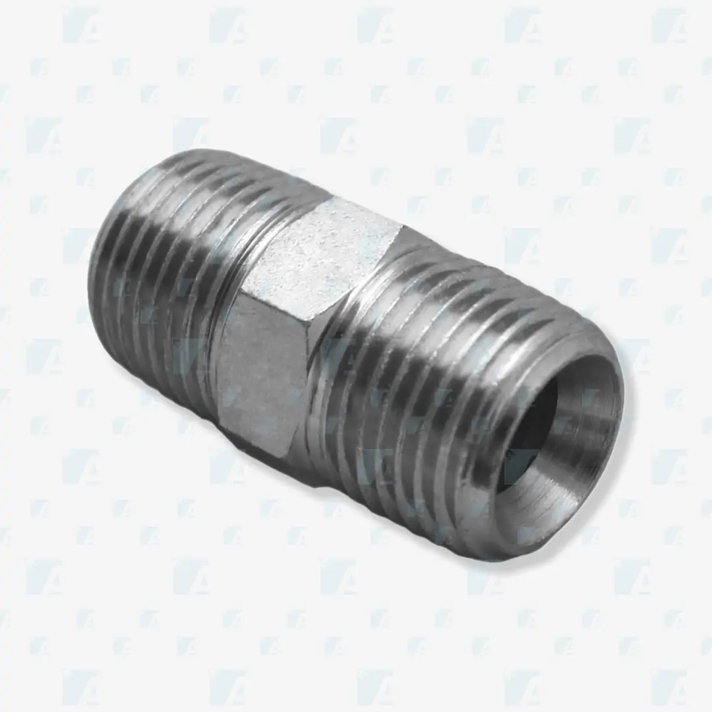

Código: ACR-NPTF-30
Adaptador hidráulico desenvolvido para realizar a conexão entre diferentes padrões de rosca, proporcionando vedação eficiente, segurança operacional e excelente resistência mecânica. Ideal para sistemas hidráulicos que exigem alta confiabilidade e desempenho contínuo.